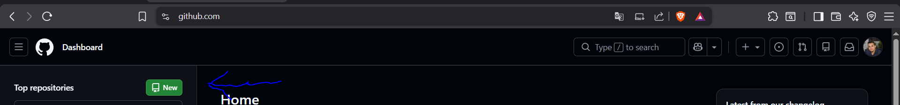
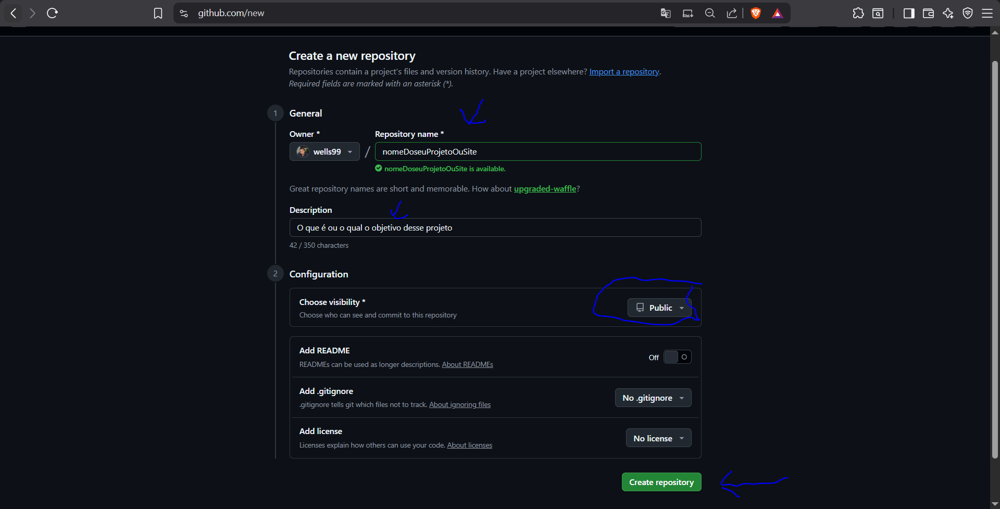
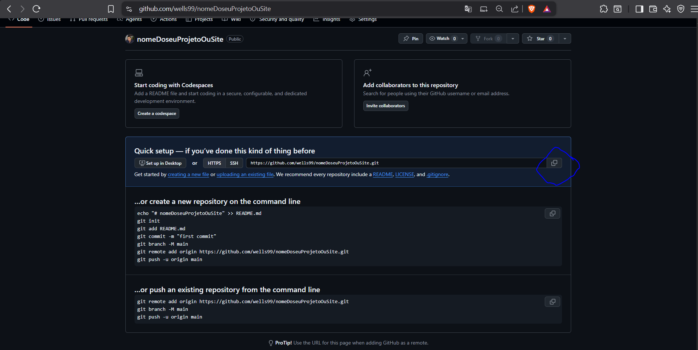
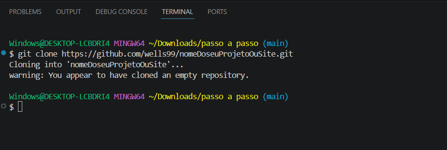
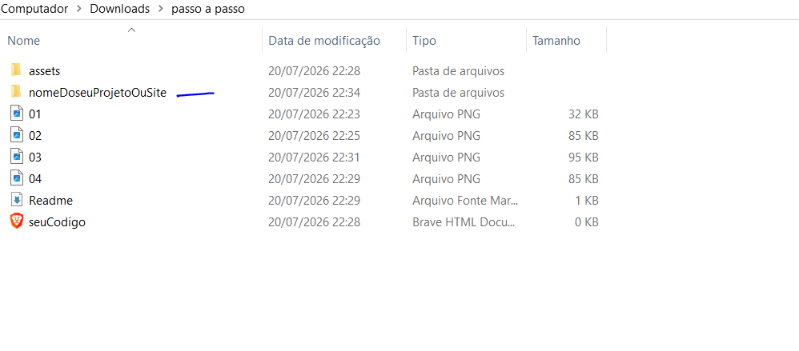
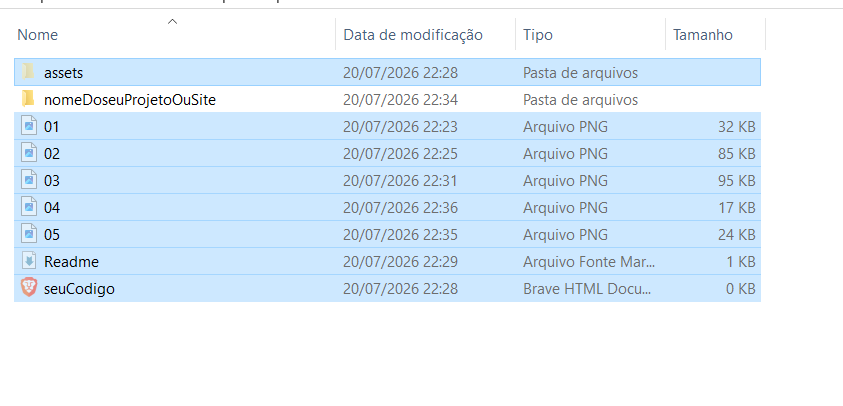
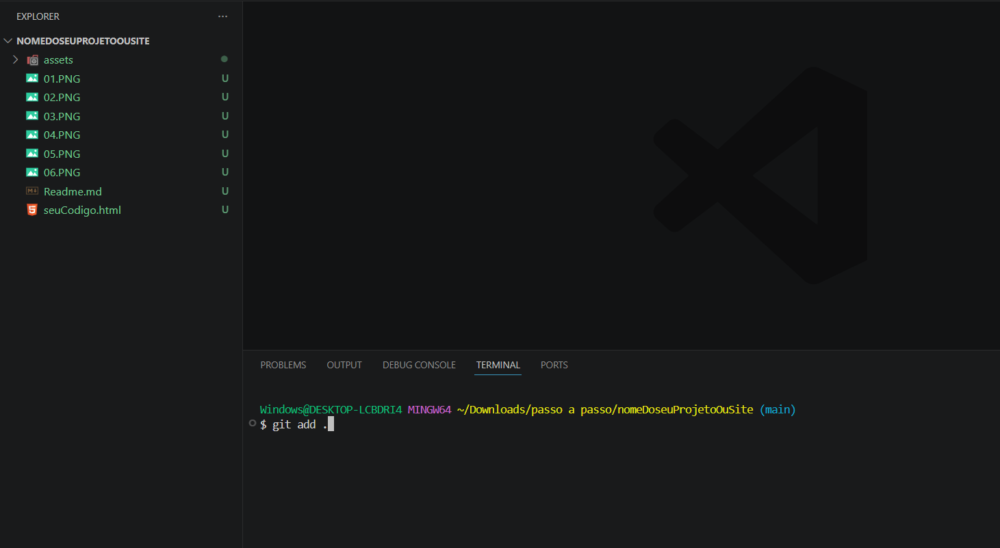
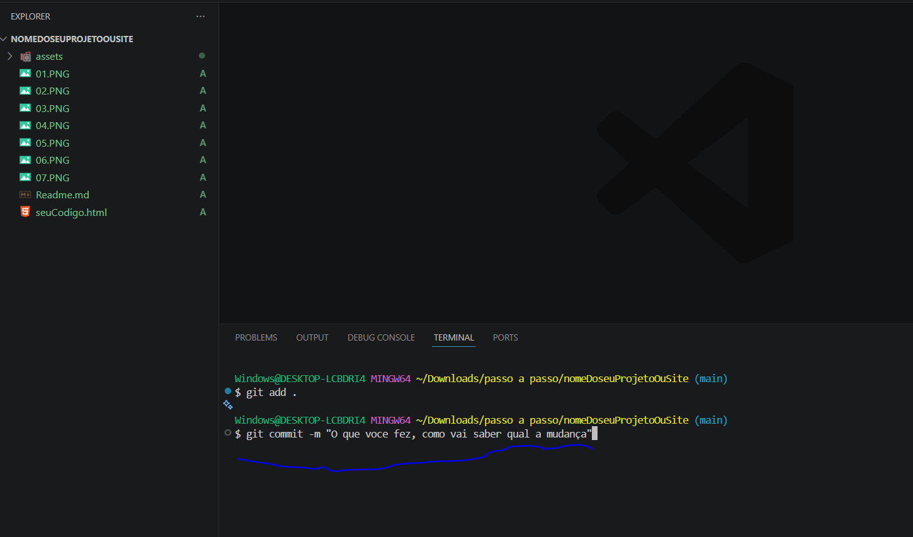
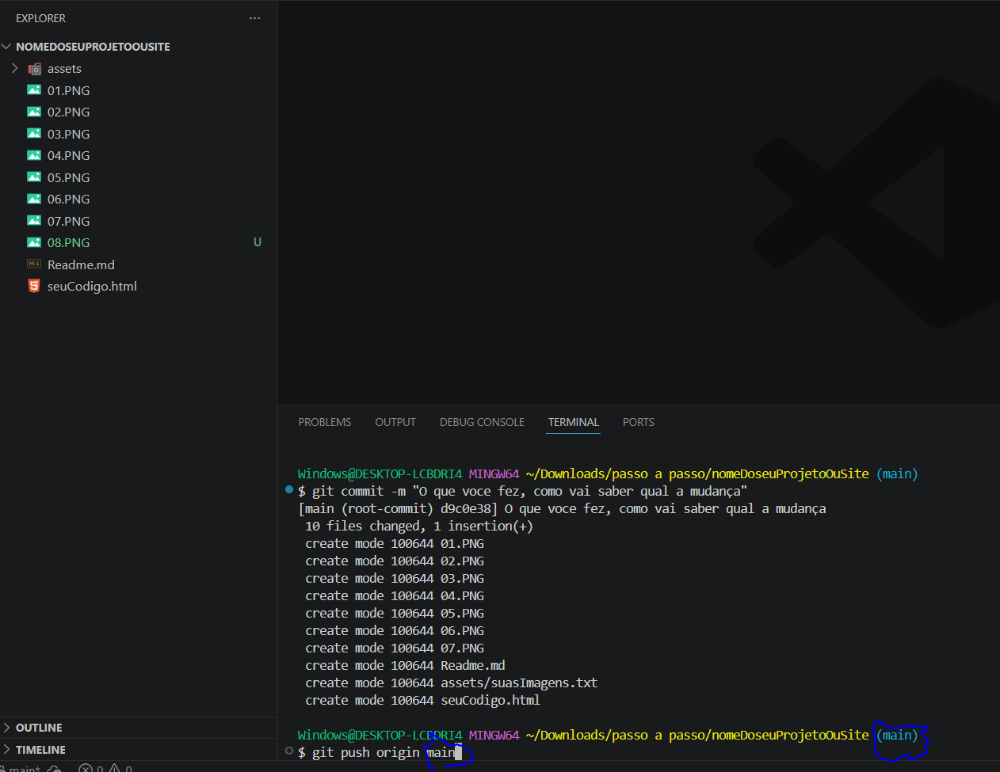

Siga os passos visuais abaixo para versionar seu código e, ao final, veja como publicar seu site na internet de graça!

Como vamos expor na internet deve ser público, mas você pode guardar códigos somente para você de forma privada

Clique no botão indicado para copiar o link do repositório.

Em uma pasta de preferencia na pasta do projeto,
Seja no vsCode ou diretamente no terminal, execute o comando:
git clone [link-copiado]



Git add .

Git commit -m "Mensagem do commit"

Git push origin main (nome da branch)

Agora que seus arquivos já estão no repositório do GitHub, você pode transformar esse código em um site público com um link real para colocar no seu portfólio. Siga o passo a passo:
index.html para ser a página inicial do site. Se o seu arquivo se chama seuCodigo.html, renomeie-o para index.html no seu editor e envie essa alteração para o GitHub.None, mude para main (ou master) e mantenha a pasta como / (root).https://seu-usuario.github.io/nome-do-repositorio/.